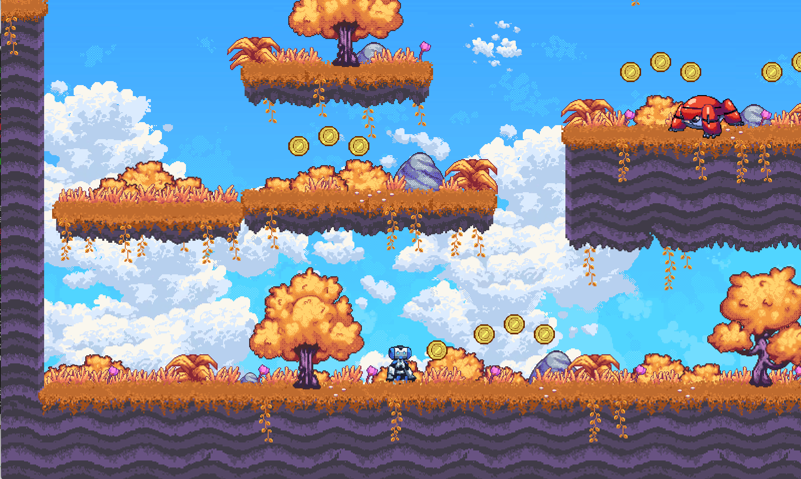
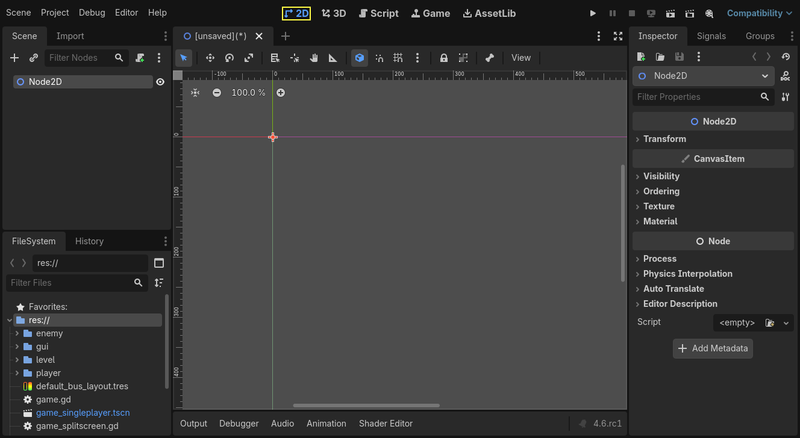
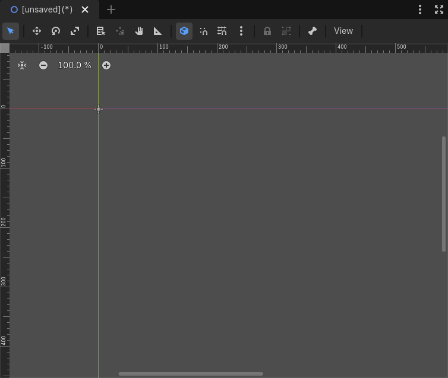
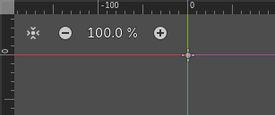

Introduction to 2D
Godot's 2D game development tools include a dedicated 2D rendering engine, physics system, and features tailored specifically for creating 2D experiences. You can efficiently design levels with the TileMap system, animate characters with 2D sprite or Cutout animation, and leverage 2D lighting for dynamic scene illumination. The built-in 2D particle system allows you to create complex visual effects, and Godot also supports custom shaders to enhance your graphics. These features, combined with Godot's accessibility and flexibility, provide a solid foundation for creating engaging 2D games.

2D Platformer Demo available on the Asset Library.
This page will show you the 2D workspace and how you can get to know it.
Tip
If you would like to get an introduction to 3D, see Introduction to 3D.
2D workspace
You will use the 2D workspace to work with 2D scenes, design levels, or create user interfaces. To switch to the 2D workspace, you can either select a 2D node from the scene tree, or use the workspace selector located at the top edge of the editor:

Similar to 3D, you can use the tabs below the workspace selector to change between currently opened scenes or create a new one using the plus (+) button. The left and right docks should be familiar from editor introduction.
Below the scene selector is the main toolbar, and beneath the main toolbar is the 2D viewport.
You can drag and drop compatible nodes from the FileSystem dock to add them to the viewport as nodes. Dragging and dropping adds the dragged node as a sibling of the selected node (if the root node is selected, adds as a child). Keeping Shift pressed when dropping adds the node as a child of the selected node. Holding Alt when dropping adds the node as a child of the root node. If Alt + Shift is held when dropping, the node type can be selected if applicable.
Main toolbar
Some buttons in the main toolbar are the same as those in the 3D workspace. A brief explanation is given with the shortcut if the mouse cursor is hovered over a button for one second. Some buttons may have additional functionality if another keypress is performed. A recap of main functionality of each button with its default shortcut is provided below from left to right:

Select Mode (Q): Allows selection of nodes in the viewport. Left clicking on a node in the viewport selects it. Left clicking and dragging a rectangle selects all nodes within the rectangle's boundaries, once released. Holding Shift while selecting adds more nodes to the selection. Clicking on a selected node while holding Shift deselects the node. In this mode, you can drag the selected node(s) to move, press Ctrl to switch to the rotation mode temporarily, or use the red circles to scale it. If multiple nodes are selected, only movement and rotation are possible. In this mode, rotation and scaling will not use the snapping options if snapping is enabled.
Move Mode (W): Enables move (or translate) mode for the selected nodes. See 2D Viewport for more details.
Rotate Mode (E): Enables rotation mode for the selected nodes. See 2D Viewport for more details.
Scale Mode (S): Enables scaling and displays scaling gizmos in both axes for the selected node(s). See 2D Viewport for more details.
Show list of selectable nodes at position clicked: As the description suggests, this provides a list of selectable nodes at the clicked position as a context menu, if there is more than one node in the clicked area.
Rotation pivot: Sets the rotation pivot to rotate node(s) around. An added node has its rotation pivot at
x: 0,y: 0, by default, with exceptions. For example, the default pivot for a Sprite2D is its center if thecenteredproperty is set totrue. If you would like to change the rotation pivot of a node, click this button and choose a new location by left clicking. The node rotates considering this point. If you have multiple nodes selected, this icon will add a temporary pivot to be used commonly by all selected nodes. Pressing Shift and clicking this button will create the pivot at the center of selected nodes. If any of the snap options are enabled, the pivot will also snap to them when dragged.Pan Mode (G): Allows you to navigate in the viewport without accidentally selecting any nodes. In other modes, you can also hold Space and drag with the left mouse button to do the same.
Ruler Mode: After enabling, click on the viewport to display the current global x and y coordinates. Dragging from a position to another one measures the distance in pixels. If you drag diagonally, it will draw a triangle and show the separate distances in terms of x, y, and total distance to the target, including the angles to the axes in degrees. The R key activates the ruler. If snapping is enabled, it also displays the measurements in terms of grid count:

Using ruler with snapping enabled.
Use Smart Snap: Toggles smart snapping for move, rotate, and scale modes; and the rotation pivot. Customize it using the three-dot menu next to the snap tools.
Use Grid Snap: Toggles snapping to grid for move and scale mode, rotation pivot, and the ruler. Customize it using the three-dot menu next to the snap tools.
You can customize the grid settings so that move mode, rotate mode, scale mode, ruler, and rotation pivot uses snapping. Use the three-dot menu for this:

Use Rotation Snap: Toggles snapping using the configured rotation setting.
Use Scale Snap: Toggles snapping using the configured scaling step setting.
Snap Relative: Toggles the usage of snapping based on the selected node's current transform values. For example, if the grids are set to 32x32 pixels and if the selected node is located at
x: 1, y: 1, then, enabling this option will temporarily shift the grids byx: 1, y: 1.Use Pixel Snap: Toggles the use of subpixels for snapping. If enabled, the position values will be integers, disabling will enable subpixel movement as decimal values. For the runtime property, consider checking Project Settings > Rendering > 2D > Snapping property for Node2D nodes, and Project Settings > GUI > General > Snap Controls to Pixels for Control nodes.
Smart Snapping: Provides a set of options to snap to specific positions if they are enabled:
Snap to Parent: Snaps to parent's edges. For example, scaling a child control node while this is enabled will snap to the boundaries of the parent.
Snap to Node Anchor: Snaps to the node's anchor. For example, if anchors of a control node is positioned at different positions, enabling this will snap to the sides and corners of the anchor.
Snap to Node Sides: Snaps to the node's sides, such as for the rotation pivot or anchor positioning.
Snap to Node Center: Snaps to the node's center, such as for the rotation pivot or anchor positioning.
Snap to Other Nodes: Snaps to other nodes while moving or scaling. Useful to align nodes in the editor.
Snap to Guides: Snaps to custom guides drawn using the horizontal or vertical ruler. More on the ruler and guides below.

Configure Snap: Opens the window shown above, offering a set of snapping parameters.
Grid Offset: Allows you to shift grids with respect to the origin.
xandycan be adjusted separately.Grid Step: The distance between each grid in pixels.
xandycan be adjusted separately.Primary Line Every: The number of grids in-between to draw infinite lines as indication of main lines.
Rotation Offset: Sets the offset to shift rotational snapping.
Rotation Step: Defines the snapping degree. E.g., 15 means the node will rotate and snap at multiples of 15 degrees if rotation snap is enabled and the rotate mode is used.
Scale Step: Determines the scaling increment factor. For example, if it is 0.1, it will change the scaling at 0.1 steps if scaling snap is enabled and the scaling mode is used.
Lock selected nodes (Ctrl + L). Locks the selected nodes, preventing selection and movement in the viewport. Clicking the button again (or using Ctrl + Shift + L) unlocks the selected nodes. Locked nodes can only be selected in the scene tree. They can easily be identified by a padlock next to their node names in the scene tree. Clicking on this padlock also unlocks the nodes.
Group selected nodes (Ctrl + G). This allows selection of the root node if any of the children are selected. Using Ctrl + Shift + G ungroups them. Additionally, clicking the ungroup button in the scene tree performs the same action.
Skeleton Options: Provides options to work with Skeleton2D and Bone2D.
Show Bones: Toggles the visibility of bones for the selected node.
Make Bone2D Node(s) from Node(s): Converts selected node(s) into Bone2D.
See also
To learn more about Skeletons, see Cutout animation.
View menu: Provides options to control the viewport view. Since its options depend heavily on the viewport, it is covered in the 2D Viewport section.
Next to the View menu, additional buttons may be visible. In the toolbar image at the beginning of this chapter, an additional Sprite2D button appears because a Sprite2D is selected. This menu provides some quick actions and tools to work on a specific node or selection. For example, while drawing a polygon, it provides buttons to add, modify, or remove points.
Coordinate system
In the 2D editor, unlike 3D, there are only two axes: x and y. Also, the viewing
angle is fixed.
In the viewport, you will see two lines in two colors going across the screen infinitely:
red for the x-axis, and green for the y-axis.
In Godot, going right and down are positive directions.
Where these two lines intersect is the origin: x: 0, y: 0.
A root node will have its origin at this position once added.
Switching to the move or scale modes after selecting a node will display the gizmos at the
node's offset position.
The gizmos will point to the positive directions of the x and y axes.
In the move mode, you can drag the green line to move only in the y axis.
Similarly, you can hold the red line to move only in the x axis.
In the scale mode, the gizmos will have a square shape. You can hold and drag the green and
red squares to scale the nodes in the y or x axes.
Dragging in a negative direction flips the node horizontally or vertically.
2D Viewport
The viewport will be the area you spend the most time if you plan to design levels or user interfaces visually:

Middle-clicking and dragging the mouse will pan the view. The scrollbars on the right or bottom of the viewport also move the view. Alternatively, the G or Space keys can be used. If you enable Editor Settings > Editors > Panning > Simple Panning, you can activate panning directly with Space only, without requiring dragging.
The viewport has buttons on the top-left. Center View centers the selected node(s) in the screen. Useful if you have a large scene with many nodes, and want to see the node selected in the scene tree. Next to it are the zoom controls. - zooms out, + zooms in, and clicking on the number with percentage defaults to 100%. Alternatively, you can use middle-mouse scrolling to zoom in (scroll up) and out (scroll down).
The black bars at the viewport's left and top edges are the rulers. You can use them to orient yourself in the viewport. By default, the rulers will display the pixel coordinates of the viewport, numbered at 100 pixel steps. Changing the zoom factor will change the shown values. Enabling Grid Snap or changing the snapping options will update the ruler's scaling and the shown values.
You can also create multiple custom guides to help you make measurements or align nodes with them:

If you have at least one node in the scene, you can create guides by dragging from the horizontal or vertical ruler towards the viewport. A purple guide will appear, showing its position, and will remain there when you release the mouse. You can create both horizontal and vertical guides simultaneously by dragging from the gray square at the rulers' intersection. Guides can be repositioned by dragging them back to their respective rulers, and they can be removed by dragging them all the way back to the ruler.
You can also enable snapping to the created guides using the Smart Snap menu.
Note
If you cannot create a line, or do not see previously created guides, make sure that they are visible by checking the View menu of the viewport. Y toggles their visibility, by default. Also, make sure you have at least one node in the scene.
Depending on the tool chosen in the toolbar, left-clicking will have a primary action in the viewport. For example, the Select Mode will select the left-clicked node in the viewport. Sometimes, left-clicking can be combined with a modifier (e.g., Ctrl, or Shift) to perform secondary actions. For example, keeping Shift pressed while dragging a node in the Select or Move modes will try to snap the node in a single axis while moving.
Right clicking in the viewport provides two options to create a node or instantiate a scene at the chosen position. If at least one node is selected, right clicking also provides the option to move the selected node(s) to this position.
Viewport has a View menu which provides several options to change the look of the viewport:
Grid: Allows you to show grids all the time, only when using snapping, or not at all. You can also toggle them with the provided option.
Show Helpers: Toggles the temporary display of an outline of the node, with the previous transform properties (position, scaling, or rotation) if a transform operation has been initiated. For Control nodes, it also shows the sizing parameters. Useful to see the deltas.
Show Rulers: Toggles the visibility of horizontal and vertical rulers. See 2D Viewport more on rulers.
Show Guides: Toggles the visibility of created guides. See 2D Viewport for on how to create them.
Show Origin: Toggles the display of the green and red origin lines drawn at
x: 0, y: 0.Show Viewport: Toggles the visibility of the game's default viewport, indicated by an indigo-colored rectangle. It is also the default window size on desktop platforms, which can be changed by going to Project Settings > Display > Window > Size and setting Viewport Width and Viewport Height.
Gizmos: Toggles the visibility of Position (shown with cross icon), Lock (shown with padlock), Groups (shown with two squares), and Transformation (shown with green and red lines) indicators.
Center Selection: The same as the Center View button inside the viewport. Centers the selected node(s) in the view. F is the default shortcut.
Frame to Selection: Similar to Center Selection, but also changes the zoom factor to fit the contents in the screen. Shift + F is the default shortcut.
Clear Guides: Deletes all guides from the screen. You will need to recreate them if you plan to use them later.
Preview Canvas Scale: Toggles the preview for scaling of canvas in the editor when the zoom factor or view of the viewport changes. Useful to see how the controls will look like after scaling and moving, without running the game.
Preview Theme: Allows to choose from the available themes to change the look of control items in the editor, without requiring to run the game.
Node2D and Control node
CanvasItem is the base node for 2D. Node2D is the base node for 2D game objects, and Control is the base node for everything GUI. For 3D, Godot uses the Node3D node.
Displaying 3D nodes in 2D
It is possible to display 3D nodes in a 2D scene by using a SubViewport. You can see this in the demo 3D in 2D Viewport.